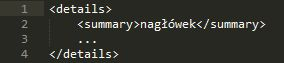
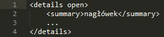

Elementy interaktywne
Pozwalają wprowadzić na stronie interaktywność z użytkownikiem.
DETAILS, SUMMARY
Dodatkowe informacje albo kontrolki, które użytkownik może zobaczyć. Element SUMMARY dostarcza ich streszczenie, legendę lub podpis.
- Panel domyślnie zamknięty:
 - Panel domyślnie otwarty:

COMMAND
Komenda, którą może wywołać użytkownik.
DIALOG
Część aplikacji w postaci okna dialogowego.
Oprócz wymienionych tutaj znaczników, do elementów interaktywnych zaliczamy również MENU.